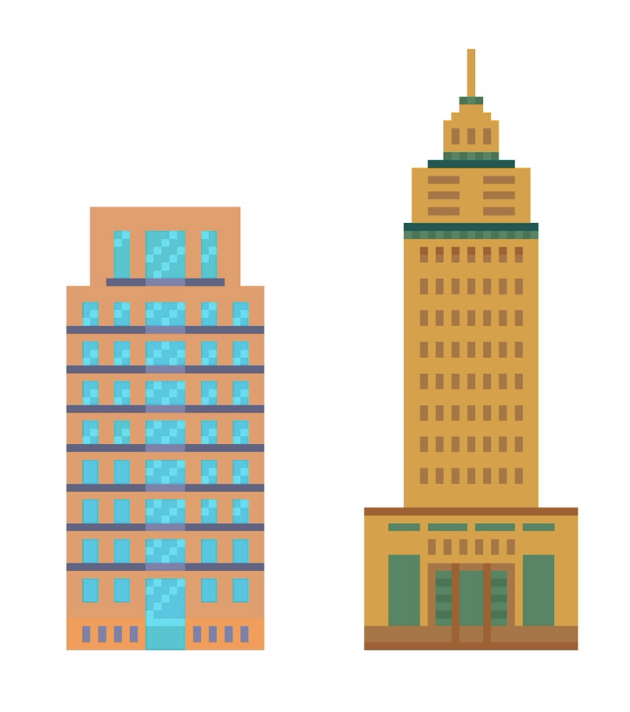

Hello new recruit! Welcome. Cities impact our health in lots of ways and this includes how they provide access to nutrition.
Consider food deserts which are low income areas 1 mile or more away from healthy affordable food. These regions are important for public health because, for residents in these areas, it can be challenging to maintain a good diet. Our team is trying to chip away at food deserts using urban planning.
I'm Chief Charlie, the leader of the team. Your assignment is one of the wealthiest cities in the US: San Francisco.
This map shows all of the areas with housing within San Francisco. Your job as a city planner is increase the chances people will choose healthy food. To help you, I've got two advisors along with me: Zoe Zoning and Tamara Transit.
Hey there I'm Zoe Zoning and can help you use one of your most powerful tools: getting subsidies and zoning for new construction. Let me walk you through.
These filled in dots ( ) represent supermarkets (source: OSM, see below). The denser northern part of the city offers many food options but there are some locations in SF with less access, especially in the less dense southern part of the city. For example, the simulation has circled Hunter's Point in the Bayview-Hunter's Point neighborhood which, in addition to being one of the poorer areas, is far from a supermarket.
) represent supermarkets (source: OSM, see below). The denser northern part of the city offers many food options but there are some locations in SF with less access, especially in the less dense southern part of the city. For example, the simulation has circled Hunter's Point in the Bayview-Hunter's Point neighborhood which, in addition to being one of the poorer areas, is far from a supermarket.
Of course, supermarkets aren't the only source of food and these filled in squares ( ) represent fast food locations.
) represent fast food locations.
This tool simulates if different residential areas would choose to go to fast food or the supermarket based on distance to each. Note the southeast of SF. For a lot of residents in this poorer area, fast food may just represent a more convenient option.
In contrast to the Bayview, other areas just to the west are both wealthier and offer more supermarket options. This demonstrates an interesting trend where sometimes income follows access: those with less financial resources to cope with distance to supermarkets are also sometimes those furthest from them.
Oh! Sorry to interrupt. I'm Tamara Transit and can help with transit improvements.
I just want to add that food deserts are often framed in terms of physical distance and income but public transit also plays a role. Consider this area near Lake Merced. While higher income relative to the Bayview, it sees poor transportation access, indicating another way the layout of the city might influence eating habits.
Now that you know what some of the problems are, how might you as a new city planner make it better? I've enabled your controls below.
Zoe can help you add new supermarkets (or fast food locations) through rezoining and building subsidies. Also, Tamara can help you explore transit subsidies and improvements which might encourage residents to travel further to get to a supermarket relative to the nearest fast food option.
Your goal is to get 80% to choose the supermarket but be careful: you have a budget.
 )
) )
) )
)